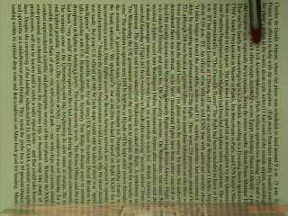

Basic Information

Chinese Name: 刘 佳禾
English Name: Jiahe Liu (Kevin)
Current Major: Electrical Engineering
Previous Major: Physics
Smart Erasor

Project Goal:
The goal of this project is to implement a program to erase several characters
'Can you erase me?' from a newspaper-textured background automatically and
gradually along with the movement of a pen tip in a given video sequence,
while keeping the background unchanged perceptively as good as possible.
Main Tools:
Template-Matching Based Target Tracking, Color Segmentation in HSI Color
Space and Morphological Operators.
YouTube Talk:
Want to find out how this could be performed? Please check out this
YouTube Video for more detailed
descriptions.